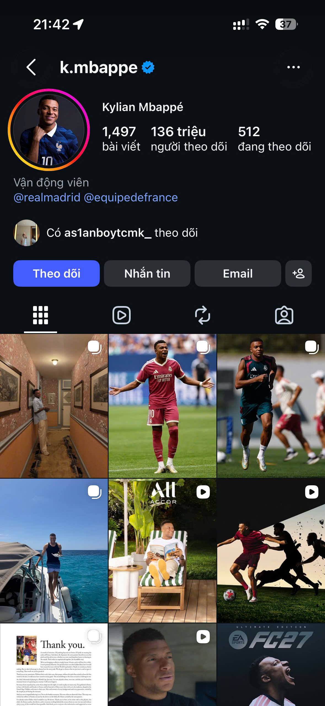

1. Giới thiệu
Instagram là một dịch vụ mạng xã hội chia sẻ hình ảnh và video do Kevin Systrom và Mike Krieger tạo ra, ra mắt lần đầu vào tháng 10 năm 2010. Hiện nay, ứng dụng thuộc sở hữu của tập đoàn Meta (trước đây là Facebook).
Instagram được sử dụng chủ yếu để người dùng chụp ảnh, quay video, áp dụng các bộ lọc nghệ thuật và chia sẻ chúng lên trang cá nhân hoặc các mạng xã hội khác. Đây cũng là một công cụ tiếp thị trực quan quan trọng cho các thương hiệu và người sáng tạo nội dung.
2. Hình ảnh minh họa

3. Các đặc điểm nổi bật
- Chia sẻ hình ảnh và video: Đăng tải hình ảnh chất lượng cao đi kèm các bộ lọc (filter) đa dạng.
- Instagram Stories: Cho phép chia sẻ khoảnh khắc ngắn hiển thị trong 24 giờ với nhiều sticker tương tác.
- Reels: Tính năng tạo và xem các đoạn video ngắn sáng tạo, thu hút lượt xem lớn.
- Direct Message (DM): Nhắn tin trực tiếp, gọi thoại, gọi video và chia sẻ bài viết riêng tư cho bạn bè.
- Instagram Shopping: Hỗ trợ các doanh nghiệp gắn thẻ sản phẩm trực tiếp vào bài viết để người dùng mua sắm.
4. Bảng thông tin tổng quan
| Tiêu chí | Chi tiết thông tin | Ghi chú / Mới cập nhật |
|---|---|---|
| Công ty quản lý | Meta Platforms, Inc. | Thâu tóm năm 2012 với giá 1 tỷ USD. |
| Nền tảng hỗ trợ | iOS, Android, Web Browser | Trải nghiệm tốt nhất trên ứng dụng di động. |
| Lượng người dùng | Hơn 2 tỷ người dùng hàng tháng | Thống kê tính đến các năm gần đây. |
| Đối tượng chính | Giới trẻ (Gen Z và Millennials) | Độ tuổi phổ biến từ 18 - 34 tuổi. |
5. Ưu điểm và Hạn chế
Ưu điểm
- Giao diện thân thiện, trực quan và tập trung vào trải nghiệm hình ảnh.
- Khả năng lan tỏa xu hướng (trend) nhanh chóng thông qua Reels và Hashtag.
- Môi trường phát triển thương hiệu cá nhân và kinh doanh trực tuyến hiệu quả.
Hạn chế
- Chưa hỗ trợ tối ưu việc xuống dòng và đính kèm link trực tiếp trong bài đăng thường.
- Dễ gây giảm tương tác nếu không cập nhật nội dung thường xuyên theo thuật toán.
6. Liên kết tham khảo
Bạn có thể tìm hiểu thêm thông tin về Instagram tại các đường dẫn dưới đây: